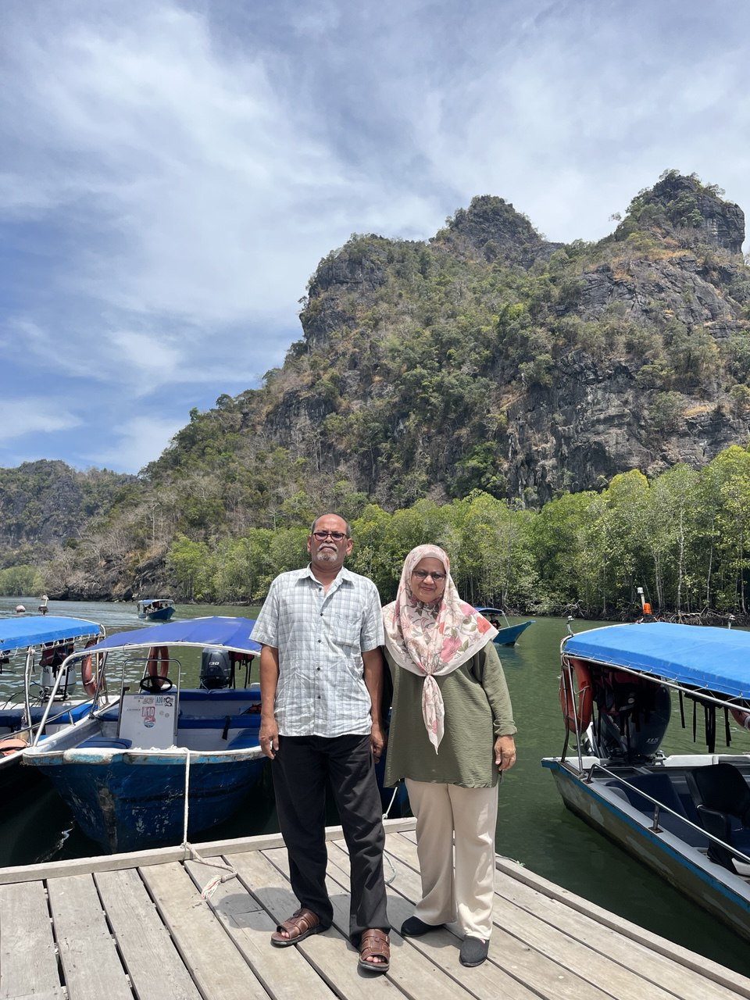

My father's name is Mohd Nawi bin Mohamad and he was born at Kuala Krai, Kelantan. He was born in 5 May 1963. He got married with my mom in year 1997 in October. My father is self-employed. He was the best father in the world. He always giving the best attention to his children. My father never neglected his children. My father can doing anything especially carpentry work.
My mother's name is Rohaya binti Che Deraman and was born at Pasir Puteh, Kelantan. She was born in 20 May 1965. My mom is a teacher. She is the best mother in the world. She always wanted her children to be a succes people. She always give advise to me to study hard and get a Diploma on time.My parent is a great parent. I love them so much. I want to give the best for them. I don't want to disappoint my parent.
My Sibling
My eldest sister's name is Nor Ainaa Alyaa bt Mohd Nawi. She was born in Hospital Kuala Krai, Kelantan on September 1998.She is 26 years old in this year. She is a graduate of UiTM Puncak Alam , Selangor. Now, she worked as a teacher. Next, my second sister is Nor Aini Izzatti binti Mohd Nawi . She was born in year 2000, 13 December at Hospital Raja Perempuan Zainab 2, Kota Bharu. She also graduated from UiTM Puncak Alam in Bachelor of Occupational Therapy. Now, she continue her study in Postgraduated Diploma in Teaching. She always liked to eat either in home or outside. She loved a cat.